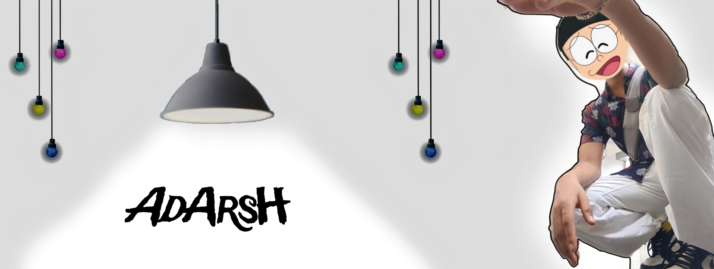

AdArsH
Web Developer | Designer | Programmer
About Me
Hello! I'm [AdArsh], a passionate web developer with experience in creating dynamic and responsive websites. I enjoy building everything from small business sites to rich interactive web apps.
My Work

Personal Portfolio Website
Description: The Personal Portfolio Website is a responsive and visually appealing web platform created to showcase my skills, projects, and experience as a web developer. This website serves as a professional digital portfolio where potential employers, clients, and collaborators can learn more about my work and get in touch with me. Features: Responsive Design: The website is fully responsive and optimized for viewing on different devices, including desktops, tablets, and smartphones. About Me Section: A detailed section providing information about my background, skills, and interests. Portfolio Gallery: A dynamic gallery showcasing selected projects with descriptions and images. Each project entry highlights the technologies used, key features, and a link to the live demo or source code. Contact Form: An interactive contact form allowing visitors to get in touch with me directly through the website. Social Media Integration: Links to my professional social media profiles, such as LinkedIn, GitHub, and Twitter, to connect with visitors and expand my network. Technologies Used: HTML5 and CSS3 for structure and styling. JavaScript for interactivity and dynamic content. Bootstrap for responsive design and layout. GitHub Pages for hosting the website..
Landscape Photography
Capturing the Beauty of Nature; Explore my collection of nature landscape photography, where each image tells a story of the natural world’s breathtaking beauty. From serene mountain ranges to tranquil lakes and lush forests, my portfolio highlights the diverse and awe-inspiring landscapes I’ve had the pleasure of capturi.

Celebrating the Artistry of Nature's Blooms Dive into a world of vibrant colors and delicate forms with my collection of aesthetic flower photography. Each photograph captures the exquisite beauty and intricate details of flowers, celebrating their natural elegance and the artistry found in nature’s most charming creations.